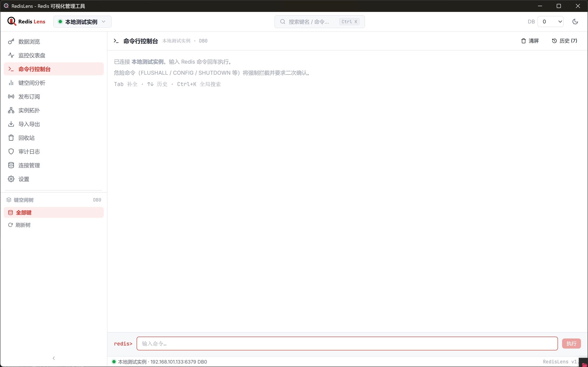

命令行控制台
命令行控制台是可视化操作之外的「逃生舱」：支持语法高亮、命令与键名补全、 按连接保存的历史，以及对危险 / 阻塞命令的强制拦截与二次确认。

输入与执行
- 在底部输入一行 Redis 命令，按 Enter 或点「执行」。
- 命令按空格分词，支持单引号、双引号与转义：
SET k "hello world"。 - 双引号内支持
\n、\t、\r与\"；单引号内为字面量。 - 每次执行都会显示时间、命令回显与结果；错误以红色显示。
- Ctrl + L 清屏（只清显示，不清历史）。
语法高亮
- 命令名使用蓝色；危险 / 阻塞命令使用红色加粗。
- 引号包裹的字符串使用绿色，数字使用橙色。
- 高亮层位于透明输入框下方，输入法组合期间会切回普通文本，避免中文输入不可见。
补全
- 输入命令前缀后，下拉列出匹配命令、中文说明与「危险」标记，最多 10 条。
- 输入空格后，按当前已输入片段补全键名：通过
SCAN 前缀* COUNT 50取最多 10 个候选。 - Tab 采纳当前候选；↑ / ↓ 切换；Esc 关闭下拉。
- 键名补全带 200 ms 防抖，避免频繁扫描。
命令历史
- 历史按连接保存在浏览器本地存储中，切换连接会切换对应历史。
- 最多保留最近 200 条；顶部「历史」按钮可打开列表并点击回填。
- 输入框内 ↑ / ↓ 浏览历史，离开历史时恢复未提交的草稿。
- 可在历史面板中清空当前连接的历史；清空不影响审计日志。
危险命令拦截
控制台在执行前对命令分类。危险命令与阻塞命令不会直接执行，而是弹出确认框；
确认框要求手动输入命令名（例如 FLUSHALL）后才能继续。
| 类别 | 典型命令 | 控制台行为 |
|---|---|---|
| 危险（数据 / 服务） | FLUSHALL、FLUSHDB、SHUTDOWN、CONFIG SET、CONFIG RESETSTAT、DEBUG、SLAVEOF / REPLICAOF、SWAPDB、MIGRATE、RESTORE |
拦截并弹出确认；确认后执行并记入审计（danger）。 |
| 脚本 / 函数 / 集群 / ACL 写 | SCRIPT FLUSH、FUNCTION FLUSH、FUNCTION DELETE、CLUSTER SETSLOT、CLUSTER FAILOVER、ACL SETUSER、ACL DELUSER |
同上，按子命令识别；只读子命令如 CLUSTER INFO 正常执行。 |
| 阻塞 / 流式 | KEYS、MONITOR |
拦截并提示会独占连接；确认后执行。UI 不适合持续流式输出。 |
| 写命令 | SET、DEL、HSET、PUBLISH、EXPIRE 等 |
正常执行；在只读模式下被拦截。 |
| 只读命令 | GET、HGETALL、SCAN、INFO、TTL、CONFIG GET |
直接执行，仅记录 info 审计。 |
| 未知命令 | 未注册的自定义模块命令等 | 正常模式下放行；只读模式下按写命令保守拦截。 |
确认框不是装饰
危险命令的确认框需要输入完整命令名，且会把「拦截」与「确认执行」分别写入审计。
在生产实例上，请再次核对顶部连接名与 DB。
只读模式
连接开启只读后，控制台会在执行前拦截所有写命令与未知命令，返回明确原因，
例如「当前连接处于只读模式，已拦截写命令」。即使传入 confirm
也只会放行危险命令，不会绕过只读策略。
结果格式
| Redis 回复 | 控制台显示 |
|---|---|
| Status / Bulk string | 原样文本；包含空格或换行时加引号。 |
| Integer | (integer) 42 |
| Nil | (nil) |
| 空数组 | (empty array) |
| 数组 | 逐行编号 1) ...；嵌套数组显示为 [a, b]。 |
| 错误 | ERR ...，以红色显示。 |
限制与注意事项
- 单条命令执行超时为 30 秒；阻塞命令会占用连接，超时后返回错误。
MONITOR、SUBSCRIBE这类持续流式命令不适合在控制台使用；请改用发布订阅页面。- 控制台没有事务会话保持：
MULTI与后续命令可能不在同一连接上，事务请用脚本或在单一客户端的场景下执行。 - 集群模式下命令按键路由；跨槽多键命令会返回
CROSSSLOT类错误。 - 不是所有模块命令都在补全表中；未注册命令仍可手动输入。
事务命令的实际限制
控制台每次执行都从连接池取连接，MULTI / EXEC 不保证落在同一物理连接。
需要原子事务时，请使用 Lua 脚本、Redis Functions，或在业务客户端中实现。
常用示例
SET user:1001 '{"name":"Ada","plan":"pro"}'
GET user:1001
HSET user:1001:profile city Shanghai
HGETALL user:1001:profile
SCAN 0 MATCH order:2026:* COUNT 100
TTL session:abc123
INFO memory
SLOWLOG GET 10
CONFIG GET maxmemory引号内的 JSON 会作为一个参数传递；含空格的值必须加引号，否则会被拆成多个参数。